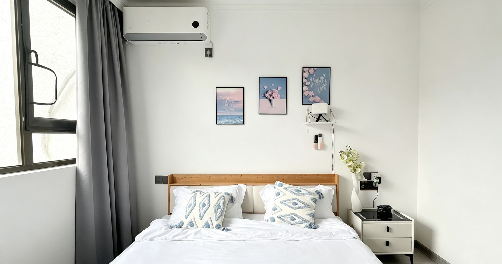
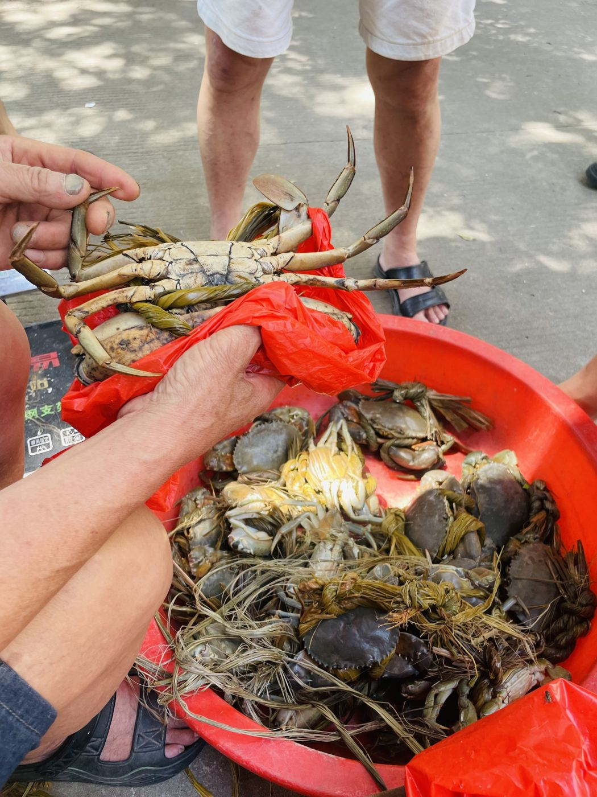
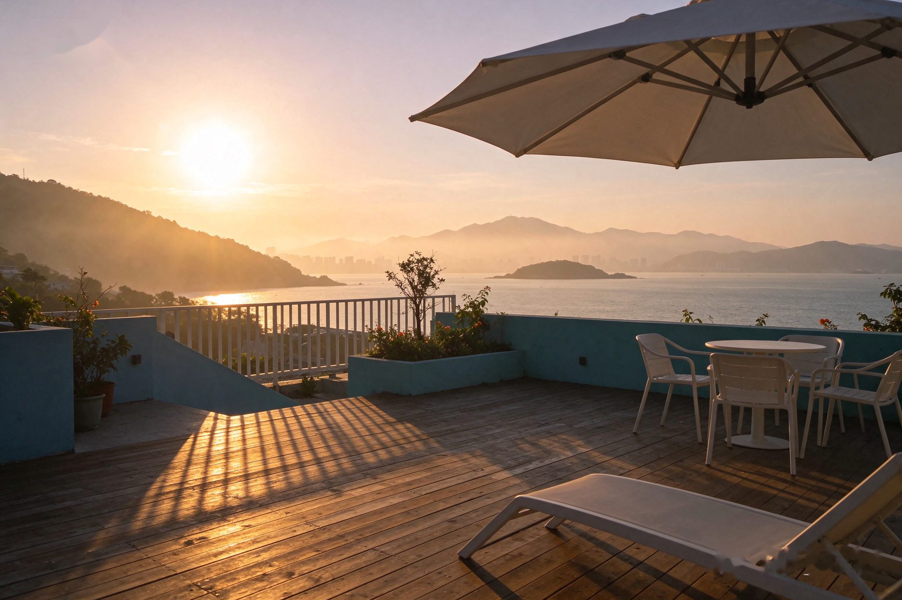
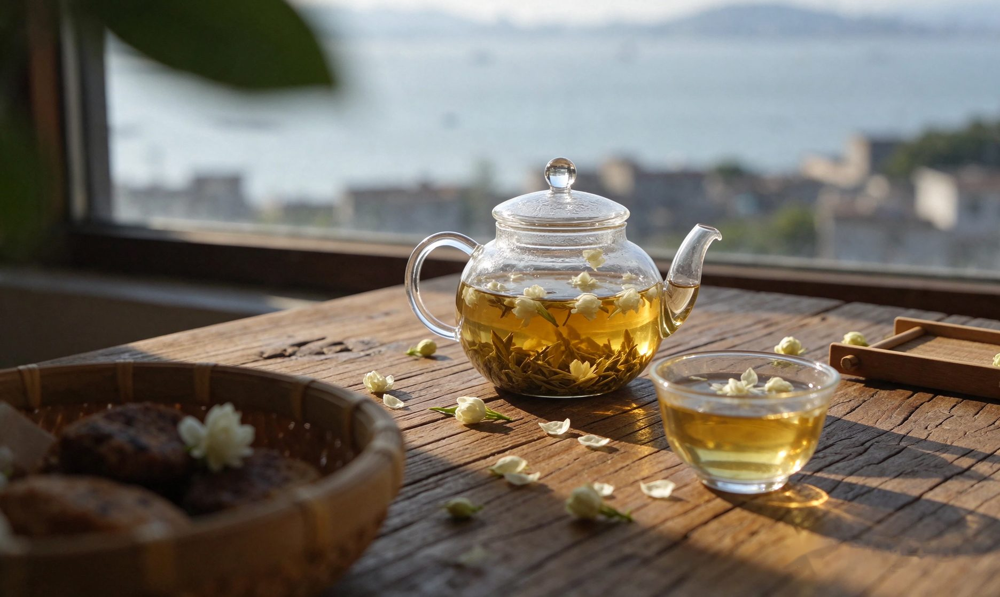

首页 / 养生频道
养生频道
在海边，把睡觉、吃饭和休息安排舒服一点。这里整理有来源的日常健康知识，读一小篇，带走一个能用的小习惯。
去健身频道看看拉伸和轻量活动
海鲜上桌前，先给双手“洗个澡”
· 当月健康提示与常识整理 · 适合一般住客及陪同儿童的家长
中国疾控中心本月提示关注诺如病毒胃肠炎。出游聚餐，把饭前洗手安排在动筷子之前，比等菜时一直刷手机更实用；这不是说琅岐发生了疫情。
- 吃饭、处理食物前，以及如厕后，用肥皂和流动水认真洗手至少 20 秒。家长可以陪孩子一起完成。
- 针对诺如病毒，免洗消毒液不能替代洗手；随身带着，也别省掉找洗手处这一步。
- 水果洗净再吃；牡蛎等贝类海鲜应烧熟煮透，不靠“看着新鲜”判断能否生吃。
这些措施有助于降低风险，不能保证不感染。饭前寻找洗手处等出游安排为本站编辑建议，不是对本地疫情的判断。
来源：中国疾控中心：2026 年 11 月健康风险提示（原文发布：2026 年 11 月 7 日）；美国 CDC：诺如病毒预防（原文标注日期：2025 年 1 月 13 日，洗手细节据此整理）。本条核对日期：2026 年 11 月 20 日；旧指南不作为新发现。
零食写着“0蔗糖”，先别替它打满分
· 近期权威科普整理 · 适合一般成年住客
给海边出游挑零食，别只看包装正面。近期卫健委发布会提醒：“0蔗糖”不代表没有其他糖，也不等于低能量。
- 先读配料表；有食物过敏时，同时查看致敏物质提示，不凭宣传词判断能不能吃。
- 比较两款食品，先把营养表统一到每 100 克或每 100 毫升，避免把每份和每包直接比较。
- 按自己实际吃下的量折算。本站举例：一包 200 克，全部吃完，摄入量就是每 100 克标示值的两倍。
控糖或有其他饮食限制时，仍需遵循个人医疗与营养建议，不用一个“零”字替代整体判断。
来源：泉州市卫生健康委员会刊载的国家卫生健康委食品标签解读实录。发布会日期：2026 年 11 月 13 日；该官方页面发布日期：2026 年 11 月 16 日；本条核对日期：2026 年 11 月 19 日。为科普整理，不是新研究。
海风凉快，防晒也别忘
· 常识整理 · 适合一般成年住客及带孩子出游的家长
有云也可能晒伤，海风带来的凉快感不能代替防晒。海边散步前，先看看当天的紫外线指数，把衣物、遮阴和防晒用品一起安排好。
- 紫外线指数达到 3 或以上时留意防护；准备遮住脸、耳朵和颈部的帽子、合适衣物及太阳镜，日晒较强时找阴凉处休息。
- 暴露部位使用 SPF 至少 30、同时有 UVA 防护的防晒产品，按产品说明足量涂抹；不要涂了防晒就延长暴晒时间。
- 一般每约两小时补涂；接触水、擦毛巾或大量出汗后及时补涂，防水产品也不能省去这一步。
婴幼儿需要额外保护，6 个月以下婴儿应避开直射阳光。若晒后明显不适、严重肿胀或起疱，及时寻求医疗帮助。
来源：NHS 防晒与日晒安全指南。原文最近审核日期：2026 年 3 月 24 日；本条核对日期：2026 年 11 月 18 日。本文为已有指南整理，不是最新研究结论。
来海边充电，先给睡眠留个位置
· 常识整理 · 适合一般成年住客
白天追日出，晚上舍不得散场，假期也容易把睡眠排到最后。可以先给睡觉留出时间，再挑最想参加的活动。

红花阁的卧室，窗帘拉好能遮光，夜里也安静
- 尽量保持相近的入睡和起床时间，让房间安静、舒适、温度适宜。
- 睡前至少半小时收起电子设备，下午和晚上少碰含咖啡因的饮品。
- 临睡前避开大餐和酒精。18–60 岁成年人通常建议每天睡至少 7 小时，其他年龄段的需求有所不同。
如果经常睡不好，或睡够了仍明显困倦，可以向医务人员咨询。
资料来源为 CDC 睡眠科普，原文日期为 2024 年 5 月 15 日。本条核对日期为 2026 年 11 月 17 日。
海鲜可以做主角，蔬菜也别缺席
· 指南整理 · 适合一般成年住客
出门玩，点菜也可以照顾到一桌人的口味。除了喜欢的海鲜，搭配蔬菜、主食和其他食材，让一餐有更多选择。

当天买到的新鲜海蟹，海鲜做主角，蔬菜也别缺席
- 饮食尽量多样，搭配蔬菜、水果、全谷物和豆类。
- 点菜时适量用盐、酱汁和糖，饮品可以选择白水或无糖饮品。
- 把食物安全放在前面，选择卫生可靠、妥善处理的食物。
有食物过敏或医生交代的饮食要求时，点餐前先沟通自己的限制。
资料来源为 世界卫生组织健康饮食资料，原文更新日期为 2026 年 1 月 26 日。本条核对日期为 2026 年 11 月 17 日。
出门在外，先把水喝够
· 常识整理 · 适合一般成年住客
海边走一天，太阳晒、汗出得多，等口渴了才想起喝水就晚了一步。出门前带一瓶水，放在随手能拿到的地方，安全的水是健康假期的底子。
- 白天定时喝几口水，别等到口渴才喝；活动多、天热的时候更要多留心。
- 优先选白水，少喝含糖饮料；吃饭时也可以要一杯白水。
- 房间里有烧水壶，睡前和起床后都可以喝一杯；出门前把水瓶装满。
有医生交代的饮水限制（比如肾脏或心脏问题）时，按医生的要求来。
资料来源为 世界卫生组织饮用水资料，原文日期为 2023 年 9 月 13 日。本条核对日期为 2026 年 11 月 17 日。
睡前先把房间调成“睡眠模式”
· 指南整理 · 适合一般成年住客
睡眠那篇讲了时间，这篇讲房间。房间安静、遮光、凉爽，入睡会容易一些。民宿的房间本身就往这个方向布置：窗帘能遮光，夜里也安静，睡前花两分钟调一下就行。
- 拉好窗帘挡住外面的光；床头的小夜灯、充电指示灯也可以遮一下。
- 睡前把手机调静音、屏幕朝下，或者收进床头柜里。
- 房间温度调到凉爽舒适；觉得热可以先开一会儿空调再睡。
- 床只用来睡觉，别在床上看手机、处理工作。
如果经常睡不好，或睡够了仍明显困倦，可以向医务人员咨询。
资料来源为 CDC/NIOSH 助眠环境指南，原文日期为 2020 年 4 月 1 日。本条核对日期为 2026 年 11 月 17 日。
早起走一圈，回来喝一壶茉莉花茶
· 指南整理 · 适合一般成年住客
不用起太早，天刚亮的时候沿着海边走一圈，回来正好喝一壶茉莉花茶。福州人的一天就是从一杯茉莉花茶开始的。

清晨的露台，海上日出（AI 示意图）
- 散步先慢走热身，再按自己的节奏走；出门前看一眼天气和潮汛。
- 走多久随自己，十分钟也算活动；觉得累就回房间歇着。
- 回来去二楼茶室，木茶桌上泡一壶茉莉花茶，住客可以免费尝。
- 茶别喝太烫、别空腹喝太多；晚上少喝，免得影响睡眠。

玻璃茶壶里的茉莉花茶，窗外是琅岐的海（AI 示意图）
有伤病或孕期，先向医务人员确认适合自己的活动量。
资料来源为 CDC 运动益处资料，原文发布于 2024 年 5 月 15 日，更新于 2026 年 9 月 18 日。本条核对日期为 2026 年 11 月 17 日。
回首页看看有福海墅